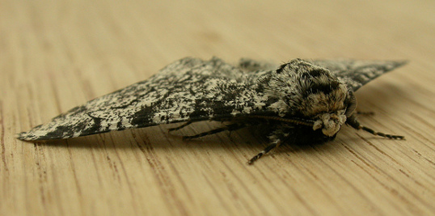

May 29, 2014
by
Denny Borsboom, Han van der Maas, Eric-Jan Wagenmakers, Department of Psychological Methods, UvA
By now, everyone is probably familiar with the recent investigation of the work of Dr. Förster, in which the Landelijk Orgaan Wetenschappelijke Integriteit (LOWI) concluded that data reported in a paper by Dr. Förster had been manipulated. In his reaction to the newspaper article NRC Dr. Förster suggested that our department would be involved in a witch-hunt. This is incorrect.
However, we have noticed that there are many questions about both the nature of the case and the procedure followed. We have compiled the following list of questions and answers to explain what happened. If any other questions arise, feel free to email them to us so we can add them to this document.
Q: What was the basis of the allegations against Dr. Förster?
A: In every single one of 40 experiments, reported across three papers, the means of two experimental conditions (“local focus” and “global focus”) showed almost exactly opposite behavior with respect to the control condition. So whenever the local focus condition led to a one-point increase of the mean level of the dependent variable compared to the control condition, the global condition led almost exactly to a one-point decrease. Thus, the samples exhibit an unrealistic level of linearity.
Q: Couldn’t the effects actually be linear in reality?
A: Yes, that is unlikely but possible. However, in addition to the perfect linearity of the effects themselves, there is far too little variance in the means of the conditions, given the variance that is present within the conditions. In other words: the means across the conditions follow the linear pattern (much) too perfectly. To show this, the whistleblower’s complaint computed the probability of finding this level of linearity (or even more perfect linearity) in the samples researched, under the assumption that, in reality, the effect is linear in the population. That probability equals 1/508,000,000,000,000,000,000.
Read more...
May 28, 2014
by
JP de Ruiter, Bielefeld University
In a famous open letter to scientists , Daniel Kahneman, seeing “a train wreck looming”, argued that social psychologists (and presumably, especially those who are publishing social priming effects) should engage in systematic and extensive replication studies to avoid a loss of credibility in the field. The fact that a Nobel Prize winning psychologist made such a clear statement gave a strong boost of support to systematic replication efforts in social psychology (see Pashler & Wagenmakers 2012, and their special issue in Psychological Science).
But in a more recent commentary, Kahneman appears to have changed his mind, and argues that “current norms allow replicators too much freedom to define their study as a direct replication of previous research”, and that the “seemingly reasonable demand” of requiring method sections to be so precise that they enable direct replications is “rarely satisfied in psychology, because behavior is easily affected by seemingly irrelevant factors”. A similar argument was put forth by Simone Schnall, who recently wrote that “human nature is complex, and identical materials will not necessarily have the identical effect on all people in all contexts”.
While I wholeheartedly agree with Kahneman’s original letter on this topic, I strongly disagree with his commentary, for reasons that I will outline here.
First, he argues (as Schnall did too) that there always are potentially influential differences between the original study and the replication attempt. But this would imply that any replication study, no matter how meticulously performed, would be meaningless. (Note that this also holds for successful replication studies.) This is a clear case of a reductio ad absurdum.
The main reason why this argument is flawed is that there is a fundamental relationship between the theoretical claim based on a finding and its proper replication, which is the topic of an interesting discussion about the degree to which a replication should be similar to the study it addresses (see Stroebe & Strack, 2014; Simons, 2014; Pashler & Harris, 2012). My position in this debate is the following. The more general the claim that the finding is claimed to support, the more “conceptual” the replication of the supporting findings can (and should) be. Suppose we have a finding F that we report in order to claim evidence for scientific claim C. In the case that C is identical to F, such that C is a claim of the type “The participants in our experiment did X at time T in location L”, it is indeed impossible to do any type of replication study, because the exact circumstances of F were unique and therefore by definition irreproducible. But in this case (that F = C), C has obviously no generality at all, and is therefore scientifically not very interesting. In such a case, there would also be no point in doing inferential statistics. If, on the other hand, C is more general than F, the level of methodological detail that is provided should be sufficient to enable readers to attempt to replicate the finding, allowing for variation that the authors do not consider important. If the authors remark that this result arises under condition A but acknowledge that it might not arise under condition A' (let's say, with participants who are aged 21-24 rather than 18-21), then clearly a follow-up experiment under condition A' isn't a valid replication. But if their claim (explicitly or implicitly) is that it doesn't matter whether condition A or A' is in effect, then a follow-up study involving condition A' might well be considered a replication. The failure to specify any particular detail might reasonably be considered an implicit claim that this detail is not important.
Second, Kahnemann is worried that even the rumor of a failed replication could damage the reputation of the original authors. But if researchers attempt to do a replication study, this does not imply that they believe or suggest that the original author was cheating. Cheating does occasionally happen, sadly, and replication studies are a good way to catch these cases. But, assuming that cheating is not completely rampant, it is much more likely that a finding cannot be replicated successfully because variables or interactions have been overlooked or not controlled for, that there were unintentional errors in the data collection or analysis, or because the results were simply a fluke, caused by our standard statistical practices severely overestimating evidence against the null hypothesis (Sellke, Bayarri & Berger, 2001; Johnson, 2013).
Furthermore, replication studies are not hostile or friendly. People are. I think it is safe to say that we all dislike uncollegial behavior and rudeness, and we all agree that it should be avoided. If Kahneman wants to give us a stern reminder that it is important for replicators to contact the original authors, then I support that, even though I personally suspect that the vast majority of replicators already do that. There already is etiquette in place in experimental psychology, and as far as I can tell, it’s mostly being observed. And for those cases where it is not, my impression is that the occasional unpleasant behavior originates not only from replicators, but also from original authors.
Another point I would like to address is the asymmetry of the relationship between author and replicator. Kahneman writes: “The relationship is also radically asymmetric: the replicator is in the offense, the author plays defense.” This may be true in some sense, but it is counteracted by other asymmetries that work in the opposite direction: The author has already successfully published the finding in question and is reaping the benefits of it. The replicator, however, is up against the strong reluctance of journals to publish replication studies, is required to have a much higher statistical power (hence invest far more resources), and is often arguing against a moving target, as more and more newly emerging and potentially relevant details of the original study can be brought forward by the original authors.
A final point: the problem that started the present replication discussion was that a number of findings that were deemed both important and implausible by many researchers failed to replicate. The defensiveness of the original authors of these findings is understandable, but so is the desire of skeptics to investigate if these effects are in fact reliable. I, both as a scientist and as a human being, really want to know if I can boost my creativity by putting an open box on my desk (Leung et al., 2012) or if the fact that I frequently take hot showers could be caused by loneliness (Bargh & Shalev, 2012). As Kahneman himself rightly put it in his original open letter: “The unusually high openness to scrutiny may be annoying and even offensive, but it is a small price to pay for the big prize of restored credibility.”
References
Bargh, J. A., & Shalev, I. (2012). The substitutability of physical and social warmth in daily life. Emotion, 12(1), 154. doi:10.1037/a0023527
Johnson, V. E. (2013). Revised standards for statistical evidence. Proceedings of the National Academy of Sciences, 110(48), 19313-19317. doi: doi/10.1073/pnas.1313476110
Leung, A. K.-y., Kim, S., Polman, E., Ong, L. S., Qiu, L., Goncalo, J. A., et al. (2012). Embodied metaphors and creative "acts". Psychological Science, 23(5), 502-509. doi:10.1177/0956797611429801
Pashler, H., & Harris, C. R. (2012). Is the replicability crisis overblown? Three arguments examined. Perspectives on Psychological Science, 7(6), 531-536. doi:10.1177/1745691612463401
Pashler, H., & Wagenmakers, E.-J. (2012). Editors' Introduction to the Special Section on Replicability in Psychological Science A Crisis of Confidence? Perspectives on Psychological
Science, 7(6), 528-530. doi:10.1177/1745691612465253
Sellke, T., Bayarri, M., & Berger, J. O. (2001). Calibration of p values for testing precise null hypotheses. The American Statistician, 55(1), 62-71. doi:10.1198/000313001300339950
Simons, D. J. (2014). The Value of Direct Replication. Perspectives on Psychological Science, 9(1), 76-80. doi:10.1177/1745691613514755
Stroebe, W., & Strack, F. (2014). The alleged crisis and the illusion of exact replication. Perspectives on Psychological Science, 9(1), 59-71. doi:10.1177/1745691613514450
May 20, 2014
by
Shauna Gordon-McKeon
Today is International Clinical Trials Day, held on May 20th in honor of George Lind, the famous Scottish physician who began one of the world's first clinical trials on May 20th, 1747. This trial discovered that vitamin C deficiency was the cause of scurvy. While it and the other life-saving trials that have been conducted in the last two hundred and sixty seven years are surely worth celebration, International Clinical Trials Day is also a time to reflect on the problems that plague the clinical trials system. In particular, the lack of reporting on nearly half of all clinical trials has potentially deadly consequences.
The AllTrials campaign, launched in January 2013, aims to have all past and present clinical trials registered and reported. From the AllTrials campaign website:
Doctors and regulators need the results of clinical trials to make informed decisions about treatments.
But companies and researchers can withhold the results of clinical trials even when asked for them. The best available evidence shows that about half of all clinical trials have never been published, and trials with negative results about a treatment are much more likely to be brushed under the carpet.
This is a serious problem for evidence based medicine because we need all the evidence about a treatment to understand its risks and benefits. If you tossed a coin 50 times, but only shared the outcome when it came up heads and you didn’t tell people how many times you had tossed it, you could make it look as if your coin always came up heads. This is very similar to the absurd situation that we permit in medicine, a situation that distorts the evidence and exposes patients to unnecessary risk that the wrong treatment may be prescribed.
It also affects some very expensive drugs. Governments around the world have spent billions on a drug called Tamiflu: the UK alone spent £500 million on this one drug in 2009, which is 5% of the total £10bn NHS drugs budget. But Roche, the drug’s manufacturer, published fewer than half of the clinical trials conducted on it, and continues to withhold important information about these trials from doctors and researchers. So we don’t know if Tamiflu is any better than paracetamol. (Author's note: in April 2014 a review based on full clinical trial data determined that Tamiflu was almost entirely ineffective.)
Initiatives have been introduced to try to fix this problem, but they have all failed. Since 2008 in the US the FDA has required results of all trials to be posted within a year of completion of the trial. However an audit published in 2012 has shown that 80% of trials failed to comply with this law. Despite this fact, no fines have ever been issued for non-compliance. In any case, since most currently used drugs came on the market before 2008, the trial results that are most important for current medical practice would not have been released even if the FDA’s law was fully enforced.
We believe that this situation cannot go on. The AllTrials initiative is campaigning for the publication of the results (that is, full clinical study reports) from all clinical trials – past, present and future – on all treatments currently being used.
We are calling on governments, regulators and research bodies to implement measure to achieve this.
And we are calling for all universities, ethics committees and medical bodies to enact a change of culture, recognise that underreporting of trials is misconduct and police their own members to ensure compliance.
You can learn more about the problem of missing clinical trial data in this brief. AllTrials also provides slides on this issue to incorporate into talks and presentations as well as a petition you can sign.
May 15, 2014
by
JP de Ruiter, Bielefeld University
Churchill believed that democracy was the “worst form of government except all those other forms that have been tried from time to time.” Something analogous is often said about anonymous peer review (APR) in science: “it may have its flaws, but it’s the ‘least bad’ of all possible systems.” In this contribution, I present some arguments to the contrary. I believe that APR is threatening scientific progress, and therefore that it urgently needs to be fixed.
The reason we have a review system in the first place is to uphold basic standards of scientific quality. The two main goals of a review system are to minimize both the number of bad studies that are accepted for publication and the number of good studies that are rejected for publication. Borrowing terminology of signal detection theory, let’s call these false positives and false negatives respectively.
It is often implicitly assumed that minimizing the number of false positives is the primary goal of APR. However, signal detection theory tells us that reducing the number of false positives inevitably leads to an increase in the rate of false negatives. I want to draw attention here to the fact that the cost of false negatives is both invisible and potentially very high. It is invisible, obviously, because we never get to see the good work that was rejected for the wrong reasons. And the cost is high, because it removes not only good papers from our scientific discourse, but also entire scientists. I personally know a number of very talented and promising young scientists who first sent their work to a journal, fully expecting to be scrutinized, but then receiving reviews that were so personal, rude, scathing, and above all, unfair, that they decided to look for another profession and never looked back. I also know a large number of talented young scientists who are still in the game, but who suffer intensely every time they attempt to publish something and get trashed by anonymous reviewers. I would not be surprised if they also leave academia soon. The inherent conservatism in APR means that people with new, original approaches to old problems run the risk of being shut out, humiliated, and consequently chased away from academia. In the short term, this is to the advantage of the established scientists who do not like their work to be challenged. In the long run, this is obviously very damaging for science. This is especially true of the many journals that will only accept papers that receive unanimously positive reviews. These journals are not facilitating scientific progress, because work with even the faintest hint of controversy is almost automatically rejected.
With all this in mind, it is somewhat surprising that APR also fails to keep out many obviously bad papers.
Read more...
May 7, 2014
by
Shauna Gordon-McKeon
This post is in response to Jon Grahe's recent article in which he invited readers to propose metaphors that might help us understand why fraud occurs and how to prevent it.
Natural selection is the process by which populations change as individual organisms succeed or fail to adapt to their environments. It is also an apt metaphor for how human cultures form and thrive. The scientific community, broadly speaking, selects for a number of personality traits, and those traits are more common among scientists than in the general population. In some cases, this is necessary and beneficial. In other cases, it is tragic.
The scientific community selects for curiosity. Not every scientist is driven by a deep desire to understand the natural world, but so many are. How boring would endless conferences, lab meetings, and lectures be if one didn’t delight in asking questions and figuring out answers. It also selects for a certain kind of analytical thinking. Those who can spot a confound or design a carefully controlled experiment are more likely to succeed. And it selects for perseverance. Just ask the researchers who work late into the night running gels, observing mice, or analyzing data.
The scientific community, like the broader culture of which it is a part, sometimes selects unjustly. It selects for the well-off: those who can afford the kind of schools where a love of science is cultivated rather than ignored or squashed, those who can volunteer in labs because they don’t need to work to support themselves and others, those who can pay $30 to read a journal article. It selects for white men: those who don’t have to face conscious and unconscious discrimination, cultural stereotyping, and microaggressions.
Of particular relevance right now is the way the scientific community selects for fraud. If asked, most scientists would say that the ideal scientist is honest, open-minded, and able to accept being wrong. But we do not directly reward these attributes. Instead, success - publication of papers, grant funding, academic positions and tenure, the approbation of our peers - is too often based on a specific kind of result. We reward those who can produce novel and positive results. We don’t reward based on how they produce them.
This does give an advantage to those with good scientific intuitions, which is a reasonable thing to select for. It also gives an advantage to risk-takers, those willing to risk their careers on being right. The risk averse? They have two options: to drop out of scientific research, as I did, or to commit fraud in order to ensure positive results, as Diederik Stapel, Marc Hauser and Jens Foster did. Among the risk-averse, those who are unwilling to do shoddy or unethical science are selected against. Those who are willing are selected for, and often reach the tops of their fields.
One of the more famous examples of natural selection is the peppered moth of England. Before the Industrial Revolution, these moths were lightly colored, allowing them to blend in with the light gray bark of the average tree. During the Industrial Revolution, extreme pollution painted the trees of England black with soot. To adapt, peppered moths evolved dark, soot-colored wings.
We can censure the individuals who commit fraud, but this is like punishing the peppered moth for its dirty wings. As long as success in the scientific community is measured by results and not process, we will continue to select for those willing to violate process in order to ensure results. Our species, the scientists, need to change our environment if we want to evolve past fraud.

Biston betularia by Donald Hobern, CC BY 2.0
May 2, 2014
by
Jon Grahe
Earlier this week, I learned about another case of fraud in psychological science (Retraction Watch, 4.29.2014). The conclusions from the evidence in the case against him after an extended investigation are hard to ignore. The probability that the findings could have occurred by chance are so minute that it is hard to believe that they didn’t result from falsified data. In an email to the scientific community (Retraction Watch, 4.30.2014), the target of this investigation strongly asserted that he never faked any data, while assuring us that the coauthor target never worked on the data, it was all his. Some comments from the Retraction Watch post use the term “witch hunt.” It was the first term I used in response as well, suggesting caution before judgment. A colleague pointed out that the difference was that there were no witches, and that there are clearly dishonest scientists. I have no choice but to agree; I think a better analogy is that of the Inquisition. We are entering the era of the Scientific Inquisition. A body of experts (LOWI in this case) will use a battery of sophisticated tools to examine the likelihood that the findings’ irregularities occurred by chance. In this case it is hard to believe his denial, but thankfully I am not a judge in the Scientific Inquisition.
Read more...
Apr 23, 2014
by
Shauna Gordon-McKeon
Dear Professor Lucky,
Congratulations on your new position as assistant professor at Utopia University. We look forward to your joining our community and are eager to aid you in your transition from Antiquated Academy. It’s our understanding that Antiquated Academy does not have an Office of Open Science, so you may be unfamiliar with who we are and what we do.
The Office of Open Science was created to provide faculty, staff and students with the technical, educational, social and logistical support they need to do their research openly. We recognize that the fast pace of research and the demands placed on scientists to be productive make it difficult to prioritize open science. We collaborate with researchers at all levels to make it easier to do this work.
Listed below are some of the services we offer.
Read more...
Apr 16, 2014
by
Joseph Cesario, Kai Jonas
Continued from Part 1.
Now that some initial points and clarifications have been offered, we can move to the meat of the argument. Direct replication is essential to science. What does it mean to replicate an effect? All effects require a set of contingencies to be in place. To replicate an effect is to set up those same contingencies that were present in the initial investigation and observe the same effect, whereas to fail to replicate an effect is to set up those same contingencies and fail to observe the same effect. Putting aside what we mean by "same effect" (i.e., directional consistency versus magnitude), we don't see any way in which people can reasonably disagree on this point. This is a general point true of all domains of scientific inquiry.
The real question becomes, how can we know what contingencies produced the effect in the original investigation? Or more specifically, how can we separate the important contingencies from the unimportant contingencies? There are innumerable contingencies present in a scientific investigation that are totally irrelevant to obtaining the effect: the brand of the light bulb in the room, the sock color of the experimenter, whether the participant got a haircut last Friday morning or Friday afternoon. Common sense can provide some guidance, but in the end the theory used to explain the effect specifies the necessary contingencies and, by omission, the unnecessary contingencies. Therefore, if one is operating under the wrong theory, one might think some contingencies are important when really they are unimportant, and more interestingly, one might miss some necessary contingencies because the theory did not mention them as being important.
Before providing an example, it might be useful to note that, as far as we can tell, no one has offered any criticism of the logic outlined above. Many sarcastic comments have been made along the lines of, "apparently we can never learn anything because of all these mysterious moderators." And it is true that the argument can be misused to defend poor research practices. But at core, there is no criticism about the basic point that contingencies are necessary for all effects and a theory establishes those contingencies.
Read more...
Apr 9, 2014
by
Joseph Cesario, Kai Jonas
We are probably thought of as "defenders" of priming effects and along with that comes the expectation that we will provide some convincing argument for why priming effects are real. We will do no such thing. The kinds of priming effects under consideration (priming of social categories which result in behavioral priming effects) is a field with relatively few direct replications1 and we therefore lack good estimates of the effect size of any specific effect. Judgments about the nature of such effects can only be made after thorough, systematic research, which will take some years still (assuming priming researchers change their research practices). And of course, we must be open to the possibility that further data will show any given effect to be small or non-existent.
One really important thing we could do to advance the field to that future ideal state is to stop calling everything priming. It appears now, especially with the introduction of the awful term "social priming," that any manipulation used by a social cognition researcher can be called priming and, if such a manipulation fails to have an effect, it is cheerfully linked to this nebulous, poorly-defined class of research called "social priming." There is no such thing as "social priming." There is priming of social categories (elderly, professor) and priming of motivational terms (achievement) and priming of objects (flags, money) and so on. And there are priming effects at the level of cognition (increased activation of concepts) or affect (valence, arousal, or emotions) or behavior (walking, trivial pursuit performance) or physiology, and some of these priming effects will be automatic and some not (and even then recognizing the different varieties of automaticity; Bargh, 1989). These are all different things and need to be treated separately.
Read more...
Apr 2, 2014
by
Brent W. Roberts
This piece was originally posted to the Personality Interest Group and Espresso (PIG-E) web blog at the University of Illinois.
As of late, psychological science has arguably done more to address the ongoing believability crisis than most other areas of science. Many notable efforts have been put forward to improve our methods. From the Open Science Framework (OSF), to changes in journal reporting practices, to new statistics, psychologists are doing more than any other science to rectify practices that allow far too many unbelievable findings to populate our journal pages.
The efforts in psychology to improve the believability of our science can be boiled down to some relatively simple changes. We need to replace/supplement the typical reporting practices and statistical approaches by:
- Providing more information with each paper so others can double-check our work, such as the study materials, hypotheses, data, and syntax (through the OSF or journal reporting practices).
- Designing our studies so they have adequate power or precision to evaluate the theories we are purporting to test (i.e., use larger sample sizes).
- Providing more information about effect sizes in each report, such as what the effect sizes are for each analysis and their respective confidence intervals.
- Valuing direct replication.
It seems pretty simple. Actually, the proposed changes are simple, even mundane.
What has been most surprising is the consistent push back and protests against these seemingly innocuous recommendations. When confronted with these recommendations it seems many psychological researchers balk. Despite calls for transparency, most researchers avoid platforms like the OSF. A striking number of individuals argue against and are quite disdainful of reporting effect sizes. Direct replications are disparaged. In response to the various recommendations outlined above, prototypical protests are:
- Effect sizes are unimportant because we are “testing theory” and effect sizes are only for “applied research.”
- Reporting effect sizes is nonsensical because our research is on constructs and ideas that have no natural metric, so that documenting effect sizes is meaningless.
- Having highly powered studies is cheating because it allows you to lay claim to effects that are so small as to be uninteresting.
- Direct replications are uninteresting and uninformative.
- Conceptual replications are to be preferred because we are testing theories, not confirming techniques.
While these protestations seem reasonable, the passion with which they are provided is disproportionate to the changes being recommended. After all, if you’ve run a t-test, it is little trouble to estimate an effect size too. Furthermore, running a direct replication is hardly a serious burden, especially when the typical study only examines 50 to 60 odd subjects in a 2×2 design. Writing entire treatises arguing against direct replication when direct replication is so easy to do falls into the category of “the lady doth protest too much, methinks.” Maybe it is a reflection of my repressed Freudian predilections, but it is hard not to take a Depth Psychology stance on these protests. If smart people balk at seemingly benign changes, then there must be something psychologically big lurking behind those protests. What might that big thing be? I believe the reason for the passion behind the protests lies in the fact that, though mundane, the changes that are being recommended to improve the believability of psychological science undermine the incentive structure on which the field is built.
I think this confrontation needs to be more closely examined because we need to consider the challenges and consequences of deconstructing our incentive system and status structure. This, then begs the question, what is our incentive system and just what are we proposing to do to it? For this, I believe a good analogy is the dilemma faced by Harry Potter in the last book of the eponymously titled book series.
Read more...